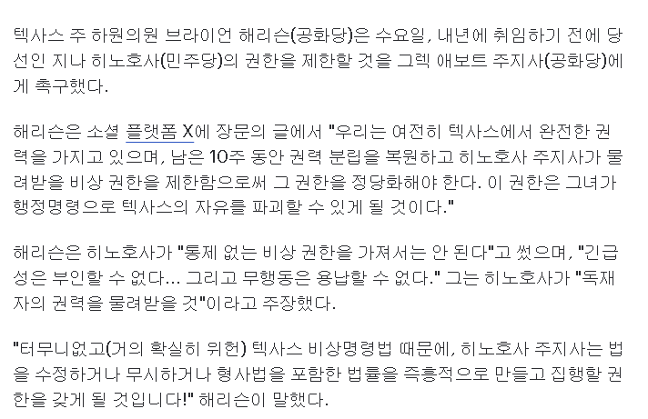

https://thehill.com/homenews/state-watch/6199751-harrison-calls-abbott-limit-hinojosa/
이쪽은 현 주지사더러 차기 주지사 권한을 박탈하라고 요청하는 중.
사실 민주당 후보가 이길 경우에 대비해 법적 권한을 박탈하자는 건
지난 10월부터 공화당 내부에서 나오던 이야기다.
심지어 해당 이야기를 구체화하기 위해 오늘 회담을 가질 예정이라고.

https://thehill.com/homenews/state-watch/6199751-harrison-calls-abbott-limit-hinojosa/
이쪽은 현 주지사더러 차기 주지사 권한을 박탈하라고 요청하는 중.
사실 민주당 후보가 이길 경우에 대비해 법적 권한을 박탈하자는 건
지난 10월부터 공화당 내부에서 나오던 이야기다.
심지어 해당 이야기를 구체화하기 위해 오늘 회담을 가질 예정이라고.
즈그들 유권자가 선택한 민주당인데 아직도 정신 못차리고 저런 헛소리나 하고 앉았네 ㅋㅋㅋ
선거 쳐발린 새끼들이 무슨 권한이 있어서 박탈? ㅋㅋ
애미애비뒤졌니?
???:아직은 나거든
민주주의를 유린한 대가를 치르는 사회를 보고 싶어요
좀 추하구만 ㅋㅋㅋㅋㅋㅋㅋ
이게 무슨 헛소리야 ㅋㅋ
이새끼들 보면 볼수록 레드팀 같단 말이지
이게무슨 ㅋㅋㅋ 사보타주하냐
국민이 뽑았지만 나는 그걸무시할수있다
헉 쿠데타다!
"잘 규율된 민병대는 자유로운 주의 안보에 필수적"인 이유를 확인하는 법
갑자기 총기 자유화를 지지하는 민주당 지지자들 ㅋㅋㅋ
뭔 권한이 있는지는 모르지만 상대방 당선되면 예산짜르기를 포함한 사업방해 하기는 유구한 전통이긴해
저러다 진짜 내전나겠는데
그러니까 정리하면, 근거가 ' 민주당 의원이 당선되면 그자가 텍사스의 자유를 파괴할것이다' 이건대...
'어떤 방식으로' 텍사스의 자유를 파괴할껀가?에 대한 답변은 없는거지?
민주당 의원의 텍사스의 자유를 파괴하는걸 막기위해 텍사스의 자유를 파괴한다
누가 누구한테 서렌치라고 협박하는거임?
보통은 반대 아닌가 ㅋㅋㅋㅋ
권력에 미친 애들한테 룰은 수단일 뿐이라니까
총기 합법 아니었으면 진작에 카우보이 고용해서 쏴죽였을껄
괜히 총기 합법이 아니구나
확실한 자살골 같은데 저걸 한다고 ㅋㅋㅋ???
트럼프가 싫어서 민주당 뽑아준거지 지들도 텍사스 강성지지층들 믿고 개진상은 다 부릴듯
뭐 시발 내전 하자는 거냐 미친새끼들이네 진짜
그냥 법적으로 불법 아니면 도덕알빠노를 진짜 하는구나
이게 민주주의가 맞냐?